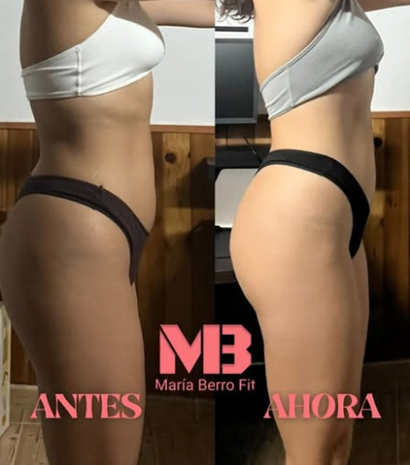
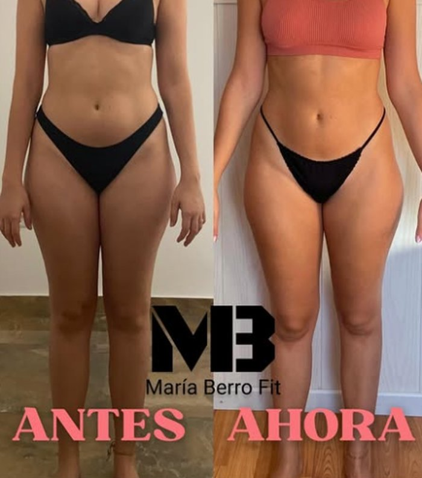

Activar
Pierdes la primera grasa, te deshinchas y el hábito se queda. Tú: 3 días de fuerza aprendiendo la técnica, comida real de casa y tu foto y revisión semanal.
Si te cuidas a medias y has probado dietas que no te duran: vamos a hacer que te veas mejor que nunca y que lo mantengas, sin dietas extremas ni vivir en el gimnasio. Comiendo lo mismo que tu familia, con fuerza a tu medida y revisión cada semana. A los 23 odiaba mi cuerpo. A los 34 me he visto mejor que nunca.
El formulario son 2 minutos y lo leo yo personalmente.


No es tu genética. Es que nadie te ha dado un plan para ti.
A los 23 pesaba 54 kg y odiaba mi cuerpo. A los 34 me he visto mejor que nunca.
Tardé 7 años en entenderlo. Copié rutinas de Instagram, quité los carbohidratos, compensé cada "fallo" con más cardio y hice volumen y definición sin ninguna estrategia. Mi glúteo no crecía por mucho que lo entrenara, y me repetía lo que seguramente te repites tú: "es mi genética, no sirvo para esto".
Hoy soy dietista y entrenadora, y mi trabajo es que tú no pierdas esos 7 años. Estos fueron mis tres grandes errores, y cómo te los ahorras:
Primero activamos tu cuerpo, luego lo esculpimos y al final te enseño a mantenerlo sin depender de nadie.
Mujeres de 30 a 45 que se cuidan a medias, han probado dietas que no les duran y quieren verse mejor que nunca —y mantenerlo— sin dietas extremas ni vivir en el gimnasio.
Qué pasa: Pierdes la primera grasa, te deshinchas y el hábito se queda.
Qué haces tú: 3 días de fuerza aprendiendo la técnica, comida real de casa y tu foto y revisión semanal.
Qué pasa: Glúteo, cintura y tono: tu cuerpo cambia de forma, no solo de peso.
Qué haces tú: Subes cargas con buena técnica y mantienes la comida real cada día.
Qué pasa: Consolidas lo conseguido y aprendes a mantenerlo comiendo con normalidad.
Qué haces tú: Subimos calorías poco a poco y aprendes a gestionar cenas, findes y vacaciones.
Prueba: "A los 23 odiaba mi cuerpo. A los 34 me he visto mejor que nunca."
Pierdes la primera grasa, te deshinchas y el hábito se queda. Tú: 3 días de fuerza aprendiendo la técnica, comida real de casa y tu foto y revisión semanal.
Glúteo, cintura y tono: tu cuerpo cambia de forma, no solo de peso. Tú: subes cargas con buena técnica y mantienes la comida real cada día.
Consolidas lo conseguido y aprendes a mantenerlo comiendo con normalidad. Tú: subimos calorías poco a poco y aprendes a gestionar cenas, findes y vacaciones.
Con la comida de tu casa y de tu familia, los findes y las cenas fuera. Nada de pollo con arroz todo el día.
Adaptado a tu tiempo. Glúteo, piernas y tren superior. Las pesas no te ponen grande: te ponen firme.
Me mandas tus vídeos y te corrijo para que entrenes seguro y avances más rápido.
Revisión cada semana y WhatsApp conmigo para tus dudas del día a día.
Cambio con el Método Mejor Que Nunca.
Cambio con el Método Mejor Que Nunca.
Cambio con el Método Mejor Que Nunca.
Pasé por todo lo que seguramente estás viviendo: comparaciones, atracones, hinchazón, dietas que no duraban y años sin ver cambios. Lo que me cambió no fue entrenar más, sino entrenar y comer con un plan. Es lo mismo que hago hoy contigo.
"[Testimonio literal de la clienta]"
[Inicial] · [edad] · [tiempo]"[Testimonio literal de la clienta]"
[Inicial] · [edad] · [tiempo]Las condiciones exactas (cumplimiento y revisiones) se detallan en el contrato.
2 minutos. Me cuentas tu situación, tu objetivo y lo que has probado.
Si encajamos, te llamo para ver tu caso y explicarte cómo trabajaríamos juntas.
Tu plan hecho para ti y tu primera revisión fijada.
Lo leo yo personalmente. Si encajamos, te escribo para hablar.
Sí. El plan se adapta a tu semana real: los días y el tiempo que tienes. Prefiero 3 entrenos que hagas siempre a 6 que dejes a la semana.
Tu cuerpo cambia a los 30 y a los 40, y el plan se ajusta a tu etapa. Si algo necesita valoración médica, te lo digo y lo vemos con tu médico.
Es el mito más común. La fuerza es lo que te da un cuerpo firme y un glúteo con forma. Ponerse "grande" lleva años de trabajo muy específico.
No. Como dietista, adapto tu plan a lo que se cocina en tu casa, a los findes y a las cenas fuera.
Sí. La fase 1 está pensada para aprender a entrenar con buena técnica, y me mandas vídeos para corregirte.
Sí. Tienes tu plan, tu revisión cada semana y WhatsApp conmigo para el día a día. No vas sola en ningún momento.
Si cumples el plan y envías tus revisiones y en la fase 1 no ves cambios, seguimos trabajando gratis hasta que lleguen. Queda por escrito en el contrato.
Depende de tu caso y del plan que necesites. Rellena el formulario y te lo explico en la llamada.
Contesto yo personalmente a cada mensaje.